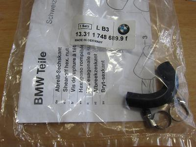
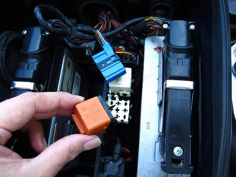
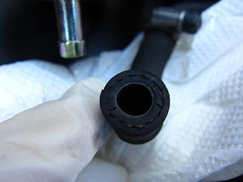
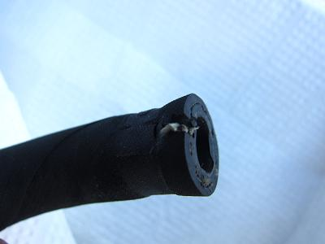
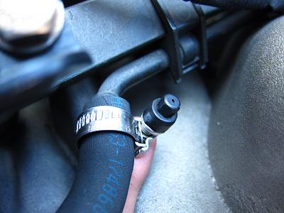
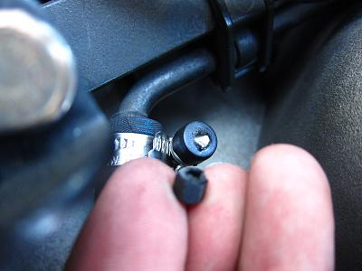
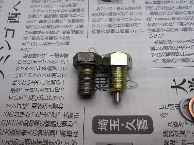

 これだけのﾎｰｽとクランプなのに、正規で購入すると4000円くらいする。 なので、以前にペリカンパーツから取り寄せておいた。それでも3000円だった。
|
 まず、燃圧を抜くためにエンジンをかけて、燃ポンリレーを外す。 そのままの状態でエンジンが止まればＯＫだ。 燃ポンリレーはDME付近にあるオレンジ色のリレーだ。
|
  取り外したﾎｰｽはひび割れと、大きな亀裂も。。 漏れる前に交換しておいてよかった^^!
|
  ﾎｰｽの取りつけには付属の専用クランプを使用する。 これは一定の力が加わると、黒い六角部分がちぎれて適正なトルクをかけれるようになっている。 このクランプは、マイナスドライバーを使えば取り外せる構造になっている。
|
おまけ  このメンテの際にエンジンオイルの交換も行った。 ドレンプラグにマグネット付きの物を使ったみた。 効果はあるのだろうか？ 使用したのはM12×1.5 (L15mm H17mm)のボルトだ。
|